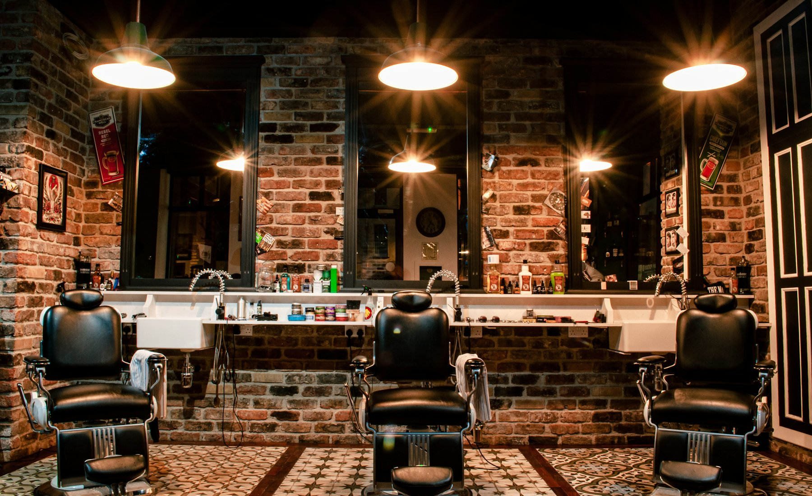
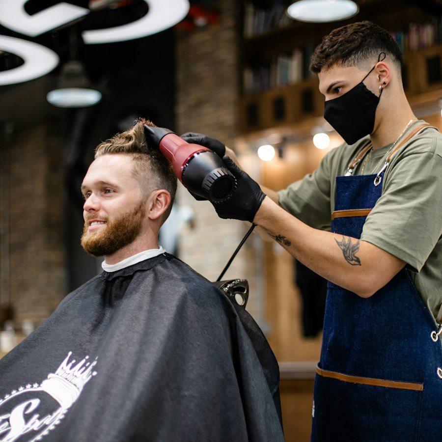

Выберите услугу
Цена и длительность видны сразу, цена окончательная.
Шесть смелых приёмов, собранных по одному. Это не сайт клиента и не часть страницы записи: здесь выбираем, что стоит перенести. Под каждым приёмом написано, когда он подходит и чем рискует.
Приём 1 Два голоса в заголовке
Запись онлайн, горячее полотенце в конце. Мастер свободен ровно к вашему времени.
Записаться онлайнОткуда: редакционный стиль, где прямой и курсивный шрифт чередуются целыми фразами, а подпись набрана мелким моноширинным. Подходит: салону, дорогому барбершопу, где важен тон. Риск: курсив работает только на крупном размере; выделять одно слово курсивом нельзя, выглядит шаблонно. Для брутального барбершопа слишком нежно.
Приём 2 Фото-сетка с подписями




Откуда: сайт, который ведёт взгляд неровными размерами и подписями курсивом, и кнопка «+» у каждой работы. Подходит: везде, где есть хорошие фото. Риск: нужны настоящие снимки; на стоковых это выглядит как каталог. Знак «+» стоит делать рабочим (открывает работу, услугу или запись на эту услугу).
Приём 3 Бегущая строка
Откуда: лента-разделитель между блоками, как на афишах. Подходит: как переход от первого экрана к прайсу; слова берутся из названий услуг клиента, так что ничего не выдумано. Риск: постоянное движение отвлекает от чтения, поэтому: медленно, пауза при наведении, при «уменьшить анимацию» стоит на месте, текст дублируется для скринридера одной подписью.
Приём 4 Шпала как главный объект
Барберская шпала это то, что узнают без подписи. Здесь она не украшение, а главный предмет страницы: вращается, а запись рядом.
Выбрать времяОткуда: уже сделанный нами рисунок шпалы, увеличенный и переосмысленный как объект. Подходит: барбершопу без хороших фото (шпала заменяет их). Риск: рисунок есть у всех барбершопов; свой знак клиента (логотип, вывеска) сильнее.
Приём 5 Время как герой
14:30
Откуда: типографика как главный образ (огромные цифры вместо фото) и идея «время, которое можно занять». Подходит: тому, у кого нет фото, и всем: время и есть наш продукт. Риск: цифры должны быть настоящими (первое свободное окно из расписания), а не нарисованными; мигающее двоеточие отключается при «уменьшить анимацию».
Приём 6 Блоки выезжают при прокрутке
Цена и длительность видны сразу, цена окончательная.
Любого свободного или к своему, с ближайшим временем.
Напоминание придёт в Telegram, отменить можно по ссылке.
Откуда: то, о чём вы просили: блоки выезжают при прокрутке, каждый со своей стороны. Подходит: там, где есть последовательность (шаги записи) или три равных довода. Риск: если выезжает каждый блок страницы, это тот самый «шаблонный AI-сайт»; поэтому лучше 1–2 места, а не везде. Плавность без библиотек: это обычная прокрутка браузера плюс CSS. Подменять саму прокрутку («липкие» скролл-библиотеки) я не советую: ломает привычное поведение на телефоне и мешает доступности.